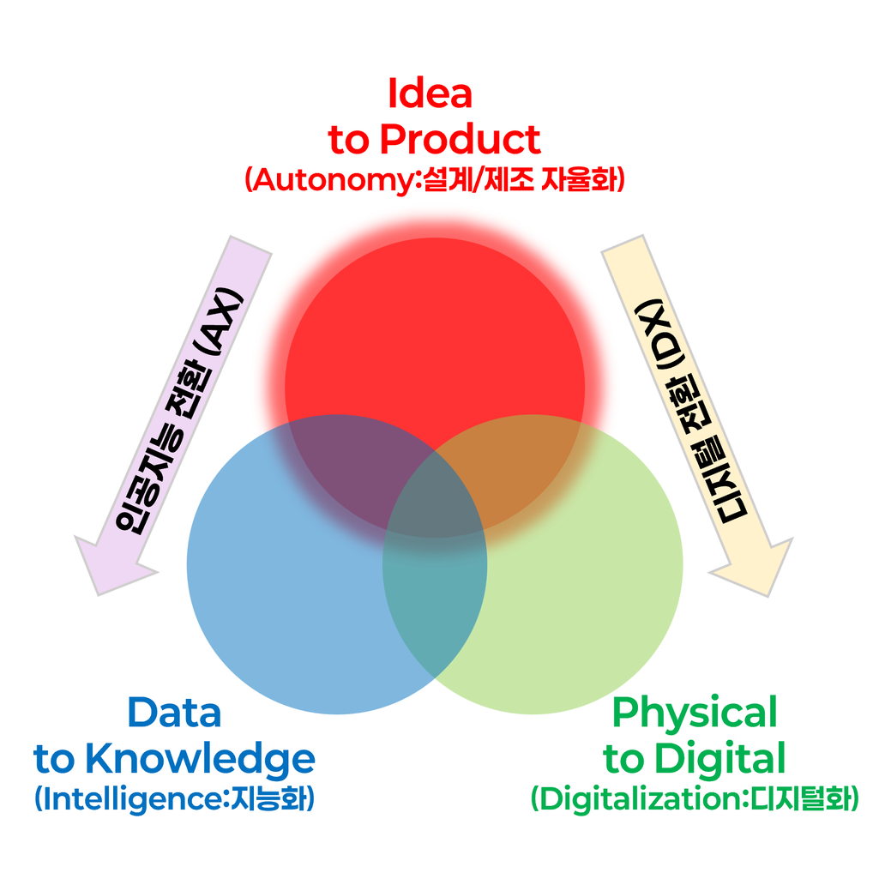
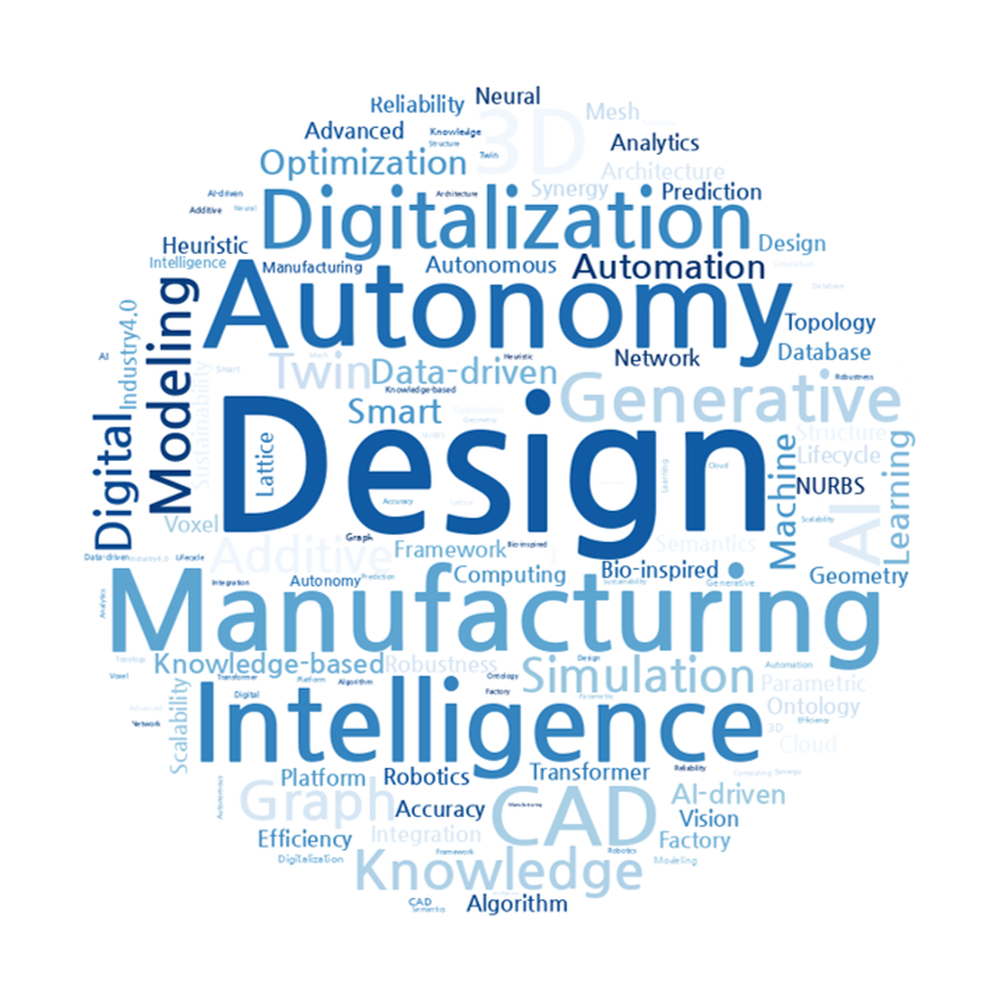
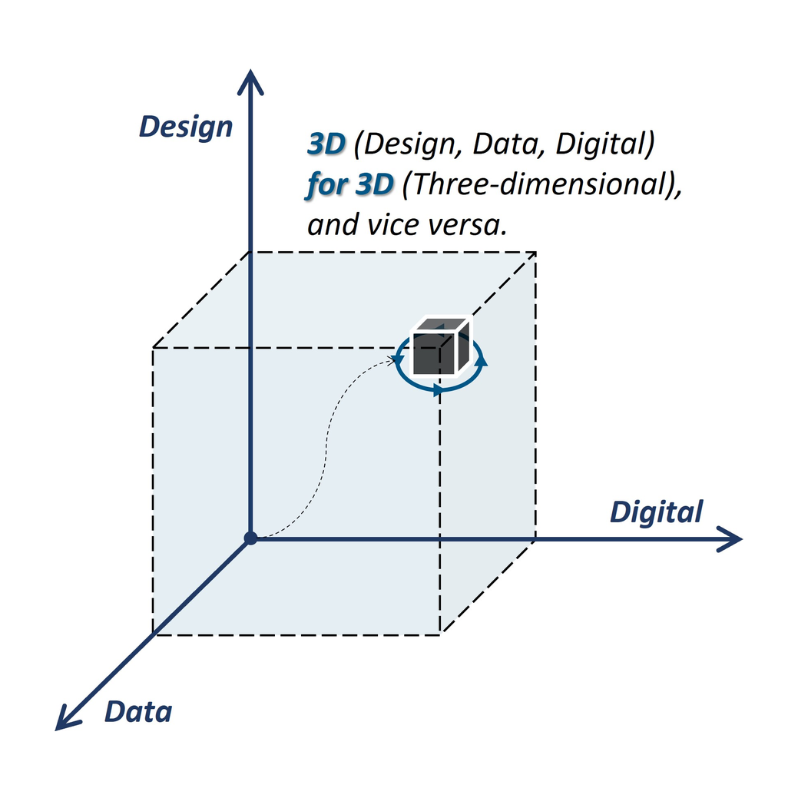

MOCKUP C · 시안
대문 뉴스 바로 아래 「최근 사진」 한 줄 (실제 사이트 미반영)
시안 A 보기
·
시안 B 보기
본문으로 건너뛰기
ADAM Lab@PNU
Autonomous Design for Advanced Manufacturing
Menu
Home
Research
Team
Awards
Publications
Board
We
redesign
design.
Latest News
Recent Photos
사진첩 최근 활동
사진첩 전체 보기 →
Research Pillars



Growth Pillars
Join ADAM Lab
×